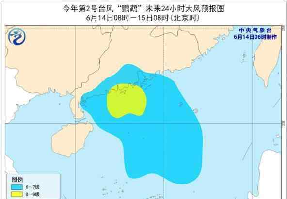

“鹦鹉”飞来了！今年2号台风鹦鹉于6月14日8时50分以热带风暴级别登陆阳江海陵岛。预计鹦鹉将继续向西北移动，经过阳江、茂名，强度逐渐减弱为低压。
据@广东天气，14日8时50分左右，台风鹦鹉在江门台山登陆时，风力9级左右，云跑得很快，阴沉的天气里有太阳。

据中国天气网首席分析师胡啸分析，“鹦鹉”作为今年首个登陆我国的台风，时间上较常年同期偏早。并且作为一个典型的南海台风，由于从生成到登陆影响时间较短，发展空间小。
从第一个台风登陆的地方来看，北方浙江宁海到三门，南方海南三亚的第一条线，可以“捕捉”到第一个台风的身影。但统计显示，首批台风的登陆地点是广东、台湾和海南，其中广东最受欢迎。
据中国天气网统计，在过去的71年中，31年年初有台风登陆广东，17年登陆台湾，13年登陆海南，分别占总数的44%、24%和18%。此外，香港、福建、浙江、广西也有第一次台风登陆。
今天广州有中到大雨记者从广州市应急管理局了解到，由于“鹦鹉”的影响，昨晚广州出现了零星阵雨，全市平均降雨量为0.5毫米，最大的是南沙区黄阁镇的3.6毫米，全市有一站录得8级阵风。预计广州将从白天到晚上阴天，有中到大雨，温度为25~30℃，东南风从弱到强。